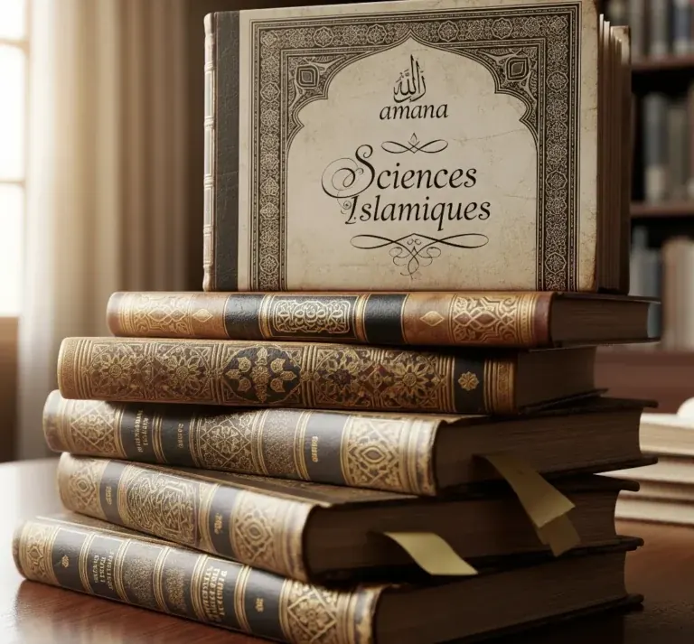

Quran Précision
Lecture, récitation, correction et progression tajwid pour renforcer votre lien au Noble Quran.
- Adultes et adolescents
- Niveaux débutant à avancé
- Objectif: tilāwa juste et régulière
Des programmes clairs pour apprendre, réviser, comprendre et transmettre avec précision.
Chaque formation est pensée pour un niveau, un objectif et un rythme précis. Les inscriptions se finalisent avec l’équipe pédagogique.
Lecture, récitation, correction et progression tajwid pour renforcer votre lien au Noble Quran.

Apprentissage progressif des lettres, sons et règles de lecture avec une méthode structurée.
Perfectionnement destiné aux femmes prêtes à renforcer leur récitation et leur pédagogie.

Lire, comprendre et parler l’arabe avec un cursus adapté au niveau de l’étudiant.

Fondements essentiels: Quran, Sunna, Fiqh, Aqida et spiritualité dans un cadre progressif.

Ateliers courts pour travailler un thème précis: makharij, révision, discipline ou méthode.
Expliquez votre niveau, votre objectif et vos disponibilités. Nous vous orientons vers le parcours le plus adapté.